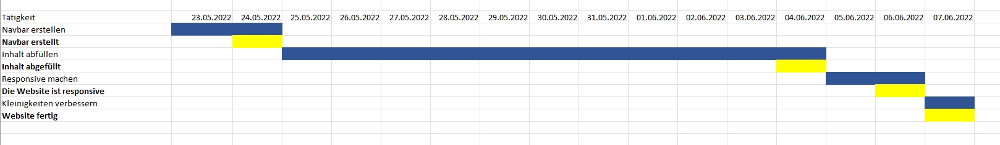

Arbeitsauftrag: Gantt-Diagramm
Aufgabe 1:
Aufgabe 2:
Ich habe mit solchen Sachen immer sehr mühe, da ich schwierigkeiten solche Sachen einzuschätzen. Ausserdem nerven mich solche Aufgaben auch mehr als dass sie Spass machen. Weil man zuviel Zeit mit Planen verbringt, als dann wirklich das Projekt umzusetzen. Die Planung ist mir zwar einigermassen geglückt, aber sie ist sehr wage. Da aber dies auch nicht das grösste Projekt ist, finde ich dies einigermassen gerechtfertigt.